User guide
User guide
EGradle has an integrated editor with following features:
Open a gradle build file with the EGradle editor. If the outline view is already active it will appear automatically, otherwise activate the view:
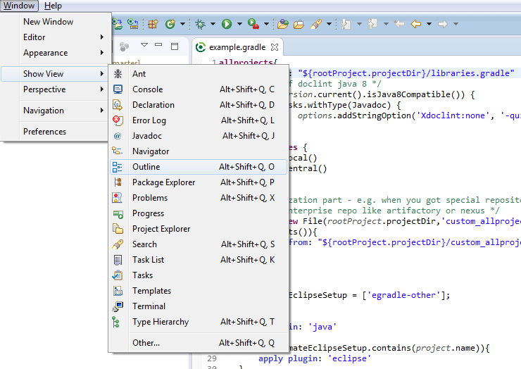The outline view will give you a reduced view of your current gradle build file.
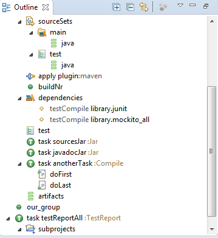The outline view can be linked with Editor. In the left picture you see a linked outline. When you click on the red circled button it will change to the purple circled version and the editor is no more linked with the outline.
A linked outline will correspond on editor caret changes and also set caret and selection if user selects a position inside outline view by one single click.
An unlinked outline has still the ability to select parts of editor - a double click to outline item will do the selection too.
| 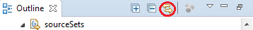 | 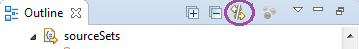 |
Inside editor preferences you are able to setup the default link behavior of new opened outlines.
Enable or disable the checkbox labeled with "New opened editors are linked with outline"
Press CTRL + O when you are inside EGradle editor and the quick outline dialog appears. Selected is tree item next to your cursor position inside editor:
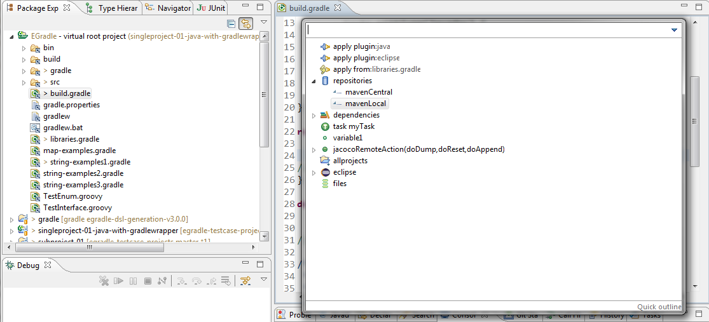When you press CURSOR DOWN inside input field, you will switch to current selected outline tree item. Now you can move around with cursor keys inside outline tree. When you press ENTER the dialog closes and your former selection is selected in editor. When you press ESC the dialog will close without any further action.
Content is same as described in Outline View. But the quick outline does not
need a view to be visible, you can also filter for wanted parts.
An example: you want to show all parts starting with "lib", so you simply type "lib" and the tree shows only leaves starting with lib.

You can also use wildcards for filtering. The location of the quick outline dialog can be moved, resized and remembered. To change the behaviour open the menu as described in next picture.
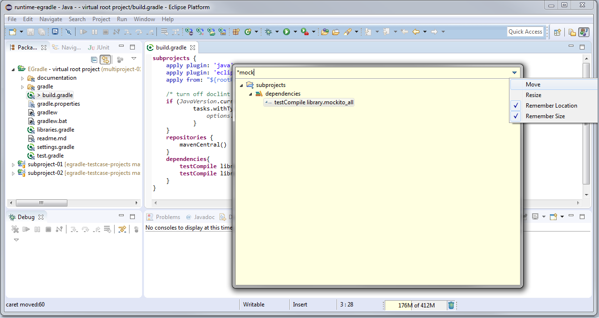EGradle editor will automatically parse the opened gradle file and mark all parse errors. In next image a closing bracket is missing:
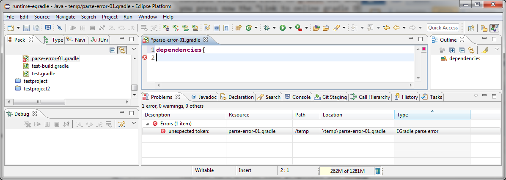The errors will be persisted and remain until parse errors are resolved.
EGradle editor supports curly bracket switching and rendering. In next picture the cursor is behind curly bracket in line 7 so its corresponding part in line 11 is rendered.
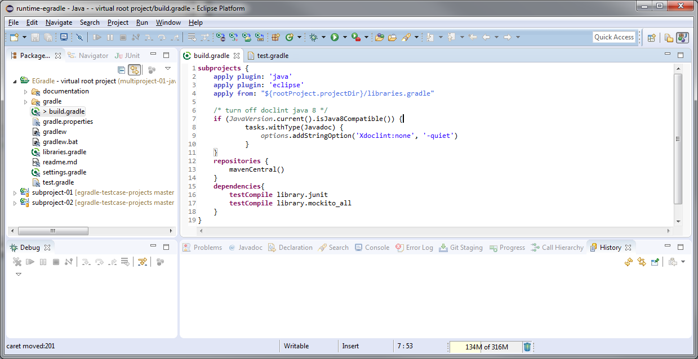When pressing CTRL + SHIFT + P the cursor moves to corresponding curly bracket in line 11 and line 7 is rendered as corresponding part:
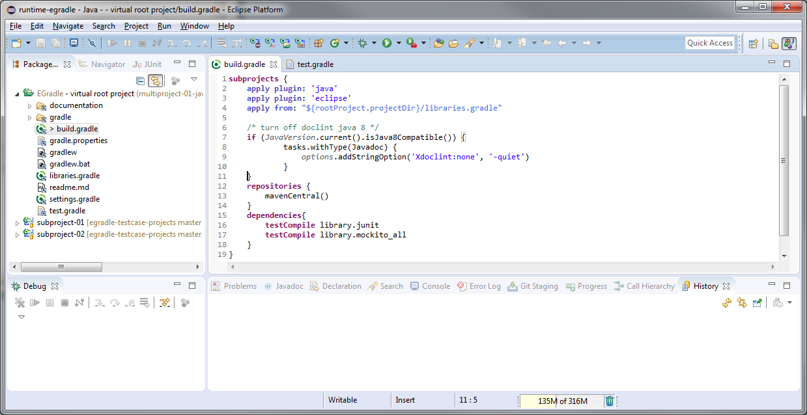When pressing CTRL + SHIFT + P again the cursor moves back to line 7.
Inside editor preferences you are able to setup the bracket switching behaviour:
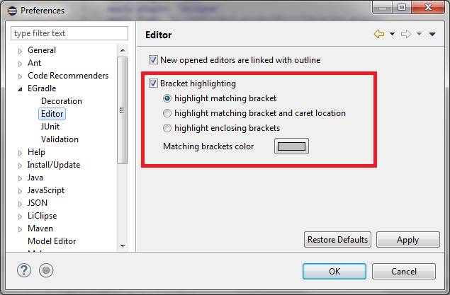URLs can be opened by pressing CTRL and hoover over a text part inside gradle editor where a URL is available. Works same way as described for linking gradle files but will open the URL with system browser.
EGradle editor is able to open other gradle files by supporting hyperlink mechanism: Simply press CTRL and hoover over a text where a gradle file is mentioned:
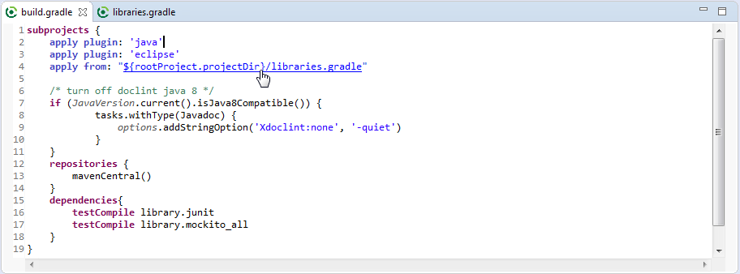On clicking to given hyperlink the other gradle file is opened - the example file contains a comment which links to "build.gradle" back so it can also be used as an hyperlink:
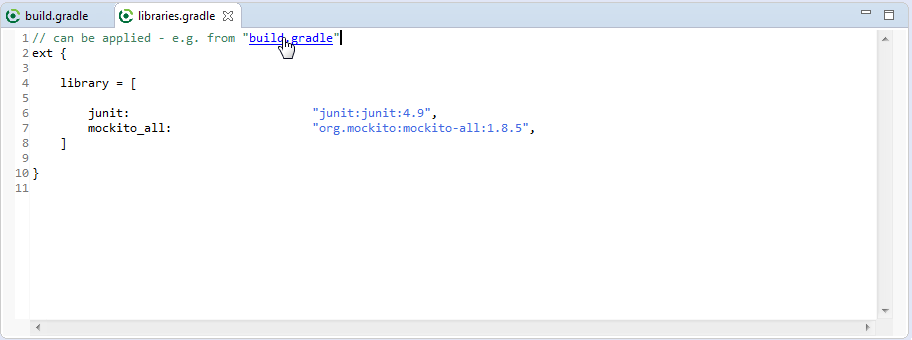
As seen in first picture above the variable ${rootProject.projectDir} is automatically resolved. Currently
the EGradle IDE only supports this variable.
If the file is not available given inside "link" there is no hyperlinking.